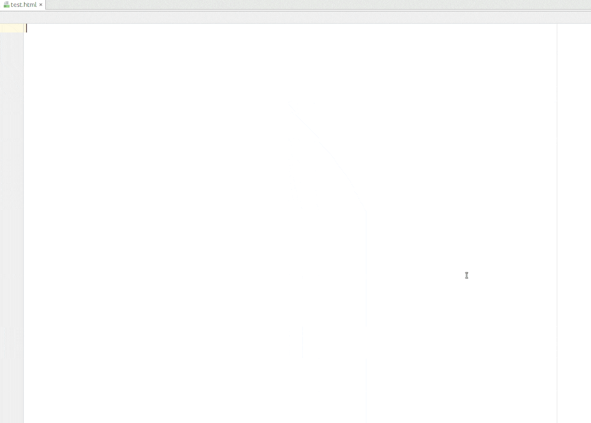

A set of Bootstrap 4 & Font awesome snippets for the following JetBrains products:
IntelliJ IDEA
WebStorm and PhpStorm
PyCharm
RubyMine
Create a new HTML document and
Type b4- followed by pressing Ctrl+Space to see all available bootstrap 4 snippets.
Type fa- followed by pressing Ctrl+Space to see all available font awesome snippets.
Alternatively you can type jumbotron followed by Ctrl+J to see the snippet matches
The detailed list of supported actions are listed below

Feel free to let me know what else you want added via the issues
Suggestions, feedback and other comments welcome via @thekalinga on Twitter.
To install the plugin open your editor (IntelliJ) and hit:
File > Settings > Plugins and click on the Browse repositories button.Look for Bootstrap 4 the right click and select Download plugin.
Finally hit the Apply button, agree to restart your IDE and you're all done!
Clone this repo
Modify the html snippet resources under src/util/resources/bootstrap. These Html snippets must follow Sublime text snippet format
Send me a pull request
You just need to create the template htmls in sublime snippet format. There is no need to update README.md/snippets.json manually. The build will take care of regenerating these files from the templates automatically
See here
Trigger
Description
$
Bootstrap master template
Trigger
Description
alert-additional-content
Alert additional content
alert-closable
Alert closable
alert-danger-a
Alert danger with link
alert-danger
Alert danger
alert-dismissible
Alert dismissible
alert-info-a
Alert info with link
alert-info
Alert info
alert-success-a
Alert success with link
alert-success
Alert success
alert-warning-a
Alert warning with link
alert-warning
Alert warning
Trigger
Description
badge-danger-pill
Badge danger pill
badge-danger
Badge danger
badge-default-pill
Badge default pill
badge-default
Badge default
badge-info-pill
Badge info pill
badge-info
Badge info
badge-primary-pill
Badge primary pill
badge-primary
Badge primary
badge-success-pill
Badge success pill
badge-success
Badge success
badge-warning-pill
Badge warning pill
badge-warning
Badge warning
Trigger
Description
bgroup-default
Button group default
bgroup-dropdown-vertical
Button group dropdown vertical
bgroup-dropdown
Button group dropdown
bgroup-size
Button group size
bgroup-toolbar
Button group toolbar
Trigger
Description
breadcrumb-default
Breadcrumb default
breadcrumb-list
Breadcrumb list
Trigger
Description
button-a
Button with link
button-block
Button block
button-checkbox
Button checkbox
button-default
Button default
button-disabled-a
Button disabled with link
button-input
Button input
button-outline
Button outline
button-radio
Button radio
button-sizes
Button sizes
button-toggle
Button toggle
Trigger
Description
card-align
Card align
card-background-custom
Card background custom
card-background
Card background
card-blockquote
Card blockquote
card-columns
Card columns
card-decks
Card decks
card-default
Card default
card-grid
Card grid
card-groups
Card groups
card-head-foot
Card head foot
card-links
Card links
card-list
Card list
card-outline
Card outline
card-overlay
Card overlay
card-pill-head
Card pill head
card-subtitle
Card subtitle
card-tab-head
Card tab head
Trigger
Description
carousel-caption
Carousel caption
carousel-default
Carousel default
Trigger
Description
collapse-accordion
Collapse accordion
collapse-button
Collapse button
collapse-default
Collapse default
Trigger
Description
dropdown-alignment
Dropdown alignment
dropdown-anchor
Dropdown anchor
dropdown-button
Dropdown button
dropdown-colored
Dropdown colored
dropdown-default
Dropdown default
dropdown-sized
Dropdown sized
dropdown-split
Dropdown split
dropdown-up-split
Dropdown up split
dropdown-up
Dropdown up
Trigger
Description
form-checkbox-custom
Form checkbox custom
form-checkbox-inline
Form checkbox inline
form-checkbox-nolabel
Form checkbox nolabel
form-checkbox
Form checkbox
form-email
Form email
form-file-custom
Form file custom
form-file
Form file
form-grid
Form grid
form-group-text
Form group text
form-group
Form group
form-help-text-inline
Form help text inline
form-help-text
Form help text
form-hidden
Form hidden
form-inline
Form inline
form-input-sizing
Form input sizing
form-input-text
Form input text
form-input
Form input
form-multi-select-custom
Form multi select custom
form-multi-select
Form multi select
form-multil-select-sizing
Form multil select sizing
form-password
Form password
form-radio-custom
Form radio custom
form-radio-inline
Form radio inline
form-radio-nolabel
Form radio nolabel
form-radio
Form radio
form-reset
Form reset
form-select-custom
Form select custom
form-select-sizing
Form select sizing
form-select
Form select
form-submit
Form submit
form-textarea
Form textarea
form-validation
Form validation
Trigger
Description
igroup-button
Input group button
igroup-checkbox-radio
Input group checkbox radio
igroup-dropdown-segmented
Input group dropdown segmented
igroup-dropdown
Input group dropdown
igroup-size
Input group size
igroup-text-both
Input group text both
igroup-text-prefix
Input group text prefix
igroup-text-sufix
Input group text sufix
Trigger
Description
jumbotron-default
Jumbotron default
jumbotron-fluid
Jumbotron fluid
Trigger
Description
label-default
Label default
label-heading
Label heading
label-pill
Label pill
Trigger
Description
list-a
List with link
list-button
List button
list-colors
List colors
list-custom-ul
List custom with unordered list
list-custom
List custom
list-minimal-ul
List minimal with unordered list
Trigger
Description
modal-customize
Modal customize
modal-default
Modal default
modal-grid
Modal grid
modal-sizes
Modal sizes
Trigger
Description
nav-a
Nav with link
nav-complete
Nav complete
nav-tabs-pills-a-variation
Nav tabs pills with link variation
nav-tabs-pills-dropdown
Nav tabs pills dropdown
nav-tabs-pills-ul-variation
Nav tabs pills with unordered list variation
nav-ul
Nav with unordered list
Trigger
Description
navbar-background-color
Navbar background color
navbar-background
Navbar background
navbar-default
Navbar default
navbar-minimal-a
Navbar minimal with link
navbar-minimal-ul
Navbar minimal with unordered list
navbar-non-responsive
Navbar non responsive
navbar-placement
Navbar placement
Pagination
Trigger
Description
pagination-default
Pagination default
pagination-sized
Pagination sized
Trigger
Description
popover-default
Popover default
popover-direction
Popover direction
popover-dismissable
Popover dismissable
Trigger
Description
progress-colored
Progress colored
progress-default
Progress default
progress-ie9
Progress ie9
progress-striped
Progress striped
Trigger
Description
scrollspy-default
Scrollspy default
Trigger
Description
tooltip-default
Tooltip default
Trigger
Description
figure-default
Figure default
Trigger
Description
image-default
Image default
Trigger
Description
table-default
Table default
table-responsive
Table responsive
table-special
Table special
Trigger
Description
typography-blockquote-reverse
Typography blockquote reverse
typography-blockquote
Typography blockquote
typography-description-list
Typography description list
typography-display-heading
Typography display heading
typography-lead
Typography lead
typography-list-inline
Typography list inline
typography-list-unstyled
Typography list unstyled
typography-muted-text
Typography muted text
Trigger
Description
grid-col
Grid column
grid-container-fluid
Grid container fluid
grid-container
Grid container
grid-default
Grid default
grid-row
Grid row
Trigger
Description
media-bottom
Media bottom
media-default
Media default
media-list
Media list
media-middle
Media middle
media-nesting
Media nesting
media-right
Media right
media-top
Media top
Trigger
Description
responsive-print-hide-custom
Responsive print hide custom
responsive-print-hide
Responsive print hide
responsive-print-show
Responsive print show
Trigger
500px
address-book
address-book-o
address-card
address-card-o
adjust
adn
align-center
align-justify
align-left
align-right
amazon
ambulance
american-sign-language-interpreting
anchor
android
angellist
angle-double-down
angle-double-left
angle-double-right
angle-double-up
angle-down
angle-left
angle-right
angle-up
apple
archive
area-chart
arrow-circle-down
arrow-circle-left
arrow-circle-o-down
arrow-circle-o-left
arrow-circle-o-right
arrow-circle-o-up
arrow-circle-right
arrow-circle-up
arrow-down
arrow-left
arrow-right
arrows
arrows-alt
arrows-h
arrows-v
arrow-up
asl-interpreting
assistive-listening-systems
asterisk
at
audio-description
automobile
backward
balance-scale
ban
bandcamp
bank
bar-chart
bar-chart-o
barcode
bars
bath
bathtub
battery
battery-0
battery-1
battery-2
battery-3
battery-4
battery-empty
battery-full
battery-half
battery-quarter
battery-three-quarters
bed
beer
behance
behance-square
bell
bell-o
bell-slash
bell-slash-o
bicycle
binoculars
birthday-cake
bitbucket
bitbucket-square
bitcoin
black-tie
blind
bluetooth
bluetooth-b
bold
bolt
bomb
book
bookmark
bookmark-o
braille
briefcase
btc
bug
building
building-o
bullhorn
bullseye
bus
buysellads
cab
calculator
calendar
calendar-check-o
calendar-minus-o
calendar-o
calendar-plus-o
calendar-times-o
camera
camera-retro
car
caret-down
caret-left
caret-right
caret-square-o-down
caret-square-o-left
caret-square-o-right
caret-square-o-up
caret-up
cart-arrow-down
cart-plus
cc
cc-amex
cc-diners-club
cc-discover
cc-jcb
cc-mastercard
cc-paypal
cc-stripe
cc-visa
certificate
chain
chain-broken
check
check-circle
check-circle-o
check-square
check-square-o
chevron-circle-down
chevron-circle-left
chevron-circle-right
chevron-circle-up
chevron-down
chevron-left
chevron-right
chevron-up
child
chrome
circle
circle-o
circle-o-notch
circle-thin
clipboard
clock-o
clone
close
cloud
cloud-download
cloud-upload
cny
code
code-fork
codepen
codiepie
coffee
cog
cogs
columns
comment
commenting
commenting-o
comment-o
comments
comments-o
compass
compress
connectdevelop
contao
copy
copyright
creative-commons
credit-card
credit-card-alt
crop
crosshairs
css3
cube
cubes
cut
cutlery
dashboard
dashcube
database
deaf
deafness
dedent
delicious
desktop
deviantart
diamond
digg
dollar
dot-circle-o
download
dribbble
drivers-license
drivers-license-o
dropbox
drupal
edge
edit
eercast
eject
ellipsis-h
ellipsis-v
empire
envelope
envelope-o
envelope-open
envelope-open-o
envelope-square
envira
eraser
etsy
eur
euro
exchange
exclamation
exclamation-circle
exclamation-triangle
expand
expeditedssl
external-link
external-link-square
eye
eyedropper
eye-slash
fa
facebook
facebook-f
facebook-official
facebook-square
fast-backward
fast-forward
fax
feed
female
fighter-jet
file
file-archive-o
file-audio-o
file-code-o
file-excel-o
file-image-o
file-movie-o
file-o
file-pdf-o
file-photo-o
file-picture-o
file-powerpoint-o
files-o
file-sound-o
file-text
file-text-o
file-video-o
file-word-o
file-zip-o
film
filter
fire
fire-extinguisher
firefox
first-order
flag
flag-checkered
flag-o
flash
flask
flickr
floppy-o
folder
folder-o
folder-open
folder-open-o
font
font-awesome
fonticons
fort-awesome
forumbee
forward
foursquare
free-code-camp
frown-o
futbol-o
gamepad
gavel
gbp
ge
gear
gears
genderless
get-pocket
gg
gg-circle
gift
git
github
github-alt
github-square
gitlab
git-square
gittip
glass
glide
glide-g
globe
google
google-plus
google-plus-circle
google-plus-official
google-plus-square
google-wallet
graduation-cap
gratipay
grav
group
hacker-news
hand-grab-o
hand-lizard-o
hand-o-down
hand-o-left
hand-o-right
hand-o-up
hand-paper-o
hand-peace-o
hand-pointer-o
hand-rock-o
hand-scissors-o
handshake-o
hand-spock-o
hand-stop-o
hard-of-hearing
hashtag
hdd-o
header
headphones
heart
heartbeat
heart-o
history
home
hospital-o
hotel
hourglass
hourglass-1
hourglass-2
hourglass-3
hourglass-end
hourglass-half
hourglass-o
hourglass-start
houzz
h-square
html5
i-cursor
id-badge
id-card
id-card-o
ils
image
imdb
inbox
indent
industry
info
info-circle
inr
instagram
institution
internet-explorer
intersex
ioxhost
italic
joomla
jpy
jsfiddle
key
keyboard-o
krw
language
laptop
lastfm
lastfm-square
leaf
leanpub
legal
lemon-o
level-down
level-up
life-bouy
life-buoy
life-ring
life-saver
lightbulb-o
line-chart
link
linkedin
linkedin-square
linode
linux
list
list-alt
list-ol
list-ul
location-arrow
lock
long-arrow-down
long-arrow-left
long-arrow-right
long-arrow-up
low-vision
magic
magnet
mail-forward
mail-reply
mail-reply-all
male
map
map-marker
map-o
map-pin
map-signs
mars
mars-double
mars-stroke
mars-stroke-h
mars-stroke-v
maxcdn
meanpath
medium
medkit
meetup
meh-o
mercury
microchip
microphone
microphone-slash
minus
minus-circle
minus-square
minus-square-o
mixcloud
mobile
mobile-phone
modx
money
moon-o
mortar-board
motorcycle
mouse-pointer
music
navicon
neuter
newspaper-o
object-group
object-ungroup
odnoklassniki
odnoklassniki-square
opencart
openid
opera
optin-monster
outdent
pagelines
paint-brush
paperclip
paper-plane
paper-plane-o
paragraph
paste
pause
pause-circle
pause-circle-o
paw
paypal
pencil
pencil-square
pencil-square-o
percent
phone
phone-square
photo
picture-o
pie-chart
pied-piper
pied-piper-alt
pied-piper-pp
pinterest
pinterest-p
pinterest-square
plane
play
play-circle
play-circle-o
plug
plus
plus-circle
plus-square
plus-square-o
podcast
power-off
print
product-hunt
puzzle-piece
qq
qrcode
question
question-circle
question-circle-o
quora
quote-left
quote-right
ra
random
ravelry
rebel
recycle
reddit
reddit-alien
reddit-square
refresh
registered
remove
renren
reorder
repeat
reply
reply-all
resistance
retweet
rmb
road
rocket
rotate-left
rotate-right
rouble
rss
rss-square
rub
ruble
rupee
s15
safari
save
scissors
scribd
search
search-minus
search-plus
sellsy
send
send-o
server
share
share-alt
share-alt-square
share-square
share-square-o
shekel
sheqel
shield
ship
shirtsinbulk
shopping-bag
shopping-basket
shopping-cart
shower
signal
sign-in
signing
sign-language
sign-out
simplybuilt
sitemap
skyatlas
skype
slack
sliders
slideshare
smile-o
snapchat
snapchat-ghost
snapchat-square
snowflake-o
soccer-ball-o
sort
sort-alpha-asc
sort-alpha-desc
sort-amount-asc
sort-amount-desc
sort-asc
sort-desc
sort-down
sort-numeric-asc
sort-numeric-desc
sort-up
soundcloud
space-shuttle
spinner
spoon
spotify
square
square-o
stack-exchange
stack-overflow
star
star-half
star-half-empty
star-half-full
star-half-o
star-o
steam
steam-square
step-backward
step-forward
stethoscope
sticky-note
sticky-note-o
stop
stop-circle
stop-circle-o
street-view
strikethrough
stumbleupon
stumbleupon-circle
subscript
subway
suitcase
sun-o
superpowers
superscript
support
table
tablet
tachometer
tag
tags
tasks
taxi
telegram
television
tencent-weibo
terminal
text-height
text-width
th
themeisle
thermometer
thermometer-0
thermometer-1
thermometer-2
thermometer-3
thermometer-4
thermometer-empty
thermometer-full
thermometer-half
thermometer-quarter
thermometer-three-quarters
th-large
th-list
thumbs-down
thumbs-o-down
thumbs-o-up
thumbs-up
thumb-tack
ticket
times
times-circle
times-circle-o
times-rectangle
times-rectangle-o
tint
toggle-down
toggle-left
toggle-off
toggle-on
toggle-right
toggle-up
trademark
train
transgender
transgender-alt
trash
trash-o
tree
trello
tripadvisor
trophy
truck
try
tty
tumblr
tumblr-square
turkish-lira
tv
twitch
twitter
twitter-square
umbrella
underline
undo
universal-access
university
unlink
unlock
unlock-alt
unsorted
upload
usb
usd
user
user-circle
user-circle-o
user-md
user-o
user-plus
users
user-secret
user-times
vcard
vcard-o
venus
venus-double
venus-mars
viacoin
viadeo
viadeo-square
video-camera
vimeo
vimeo-square
vine
vk
volume-control-phone
volume-down
volume-off
volume-up
warning
wechat
weibo
weixin
whatsapp
wheelchair
wheelchair-alt
wifi
wikipedia-w
window-close
window-close-o
window-maximize
window-minimize
window-restore
windows
won
wordpress
wpbeginner
wpexplorer
wpforms
wrench
xing
xing-square
yahoo
yc
y-combinator
y-combinator-square
yc-square
yelp
yen
yoast
youtube
youtube-play
youtube-square
Bootstrap 4 & Font awesome - IntelliJ Plugin is open-sourced software licensed under the MIT license .
Readme template for this plugin was initially borrowed from here & here
{kind=link}